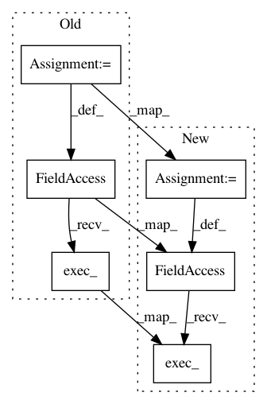

098408171dd0f2fd01cb113df78b23e4b6c89886,ilastik/widgets/featureDlg.py,,,#,145
Before Change
from PyQt4.QtGui import QApplication
from featureTableWidget import FeatureEntry
app = QApplication(sys.argv)
// app.setStyle("windows")
// app.setStyle("motif")
// app.setStyle("cde")
// app.setStyle("plastique")
// app.setStyle("macintosh")
// app.setStyle("cleanlooks")
ex1 = FeatureDlg()
ex1.createFeatureTable({"Color": [FeatureEntry("Banana")], "Edge": [FeatureEntry("Mango"), FeatureEntry("Cherry")]}, [0.3, 0.7, 1, 1.6, 3.5, 5.0, 10.0])
ex1.setWindowTitle("ex1")
ex1.setImageToPreView((numpy.random.rand(200,200)*256).astype(numpy.uint8))
ex1.setIconsToTableWidget("icons/CheckboxFull.png", "icons/CheckboxPartially.png", "icons/CheckboxEmpty.png")
// print "table ", ex1.featureTableWidget.sizeHint()
// print "horiHeader", ex1.featureTableWidget.horizontalHeader().sizeHint()
// print "verticalHeader", ex1.featureTableWidget.verticalHeader().sizeHint().height()
// print "HHeader columnWidth ", ex1.featureTableWidget.columnWidth(6)
// print "tableHHeader ", ex1.featureTableWidget.horizontalHeaderItem(1).sizeHint()
// print "tableAndViewLayout ", ex1.tableAndViewLayout.sizeHint()
// print "tableAndViewGroupBox ", ex1.tableAndViewGroupBox.size()
// print "layout ", ex1.layout.sizeHint()
ex1.show()
ex1.raise_()
ex2 = FeatureDlg()
ex2.createFeatureTable({"Color": [FeatureEntry("Banananananaana")], "Edge": [FeatureEntry("Mango"), FeatureEntry("Cherry")]}, [0.3, 0.7, 1, 1.6, 3.5, 5.0, 10.0])
ex2.setWindowTitle("ex2")
ex2.setImageToPreView((numpy.random.rand(100,100)*256).astype(numpy.uint8))
ex2.show()
ex2.raise_()
def test():
selectedFeatures = ex1.featureTableWidget.createSelectedFeaturesBoolMatrix()
ex2.featureTableWidget.setSelectedFeatureBoolMatrix(selectedFeatures)
ex1.accepted.connect(test)
app.exec_()
After Change
from PyQt4.QtGui import QApplication
from featureTableWidget import FeatureEntry
app = QApplication(sys.argv)
//app.setStyle("windows")
//app.setStyle("motif")
//app.setStyle("cde")
//app.setStyle("plastique")
//app.setStyle("macintosh")
//app.setStyle("cleanlooks")
ex = FeatureDlg()
ex.createFeatureTable([("Color", [FeatureEntry("Banananananaana")]), ("Edge", [FeatureEntry("Mango"), FeatureEntry("Cherry")])], [0.3, 0.7, 1, 1.6, 3.5, 5.0, 10.0])
ex.setWindowTitle("FeatureTest")
ex.setImageToPreView(None)
ex.exec_()
app.exec_()
In pattern: SUPERPATTERN
Frequency: 3
Non-data size: 6
Instances
Project Name: ilastik/ilastik
Commit Name: 098408171dd0f2fd01cb113df78b23e4b6c89886
Time: 2013-05-03
Author: ben-heuer@web.de
File Name: ilastik/widgets/featureDlg.py
Class Name:
Method Name:
Project Name: ilastik/ilastik
Commit Name: 9be131f0e7c77086ab4c3cad7469887bd1d55c89
Time: 2013-05-15
Author: ben-heuer@web.de
File Name: ilastik/widgets/featureDlg.py
Class Name:
Method Name:
Project Name: ilastik/ilastik
Commit Name: b9345f4c94efb8d7d396213f4bf1bfa89e291c52
Time: 2012-04-04
Author: bergs@ubuntu.(none)
File Name: ilastik-shell/ilastikshell/ilastikShell.py
Class Name:
Method Name: